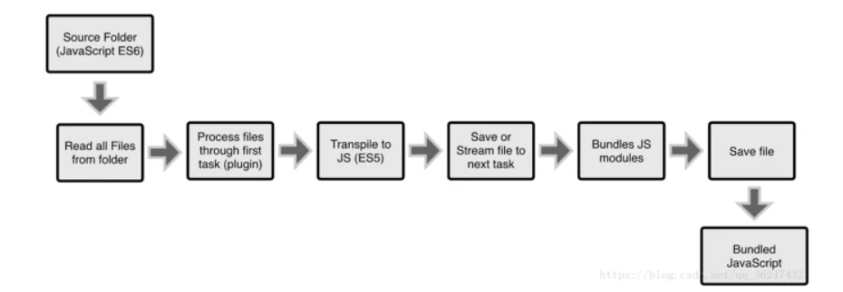
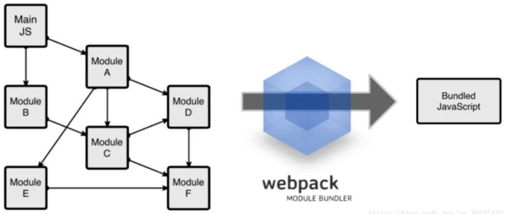
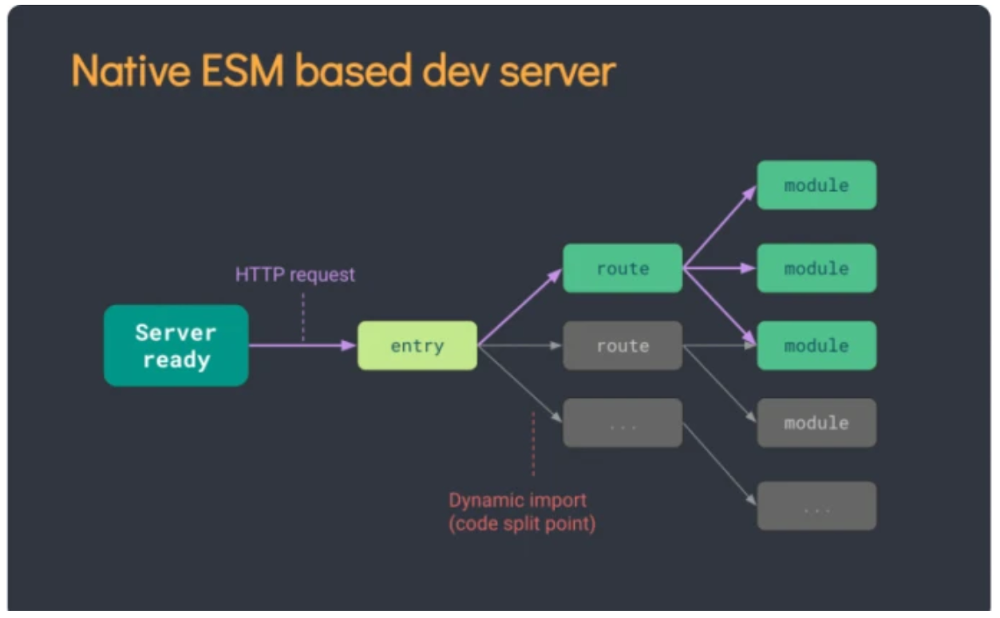
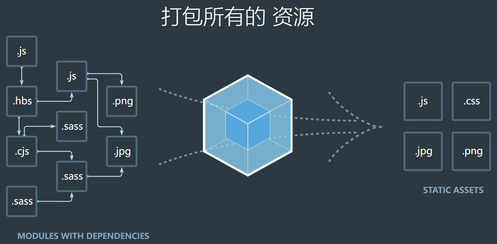
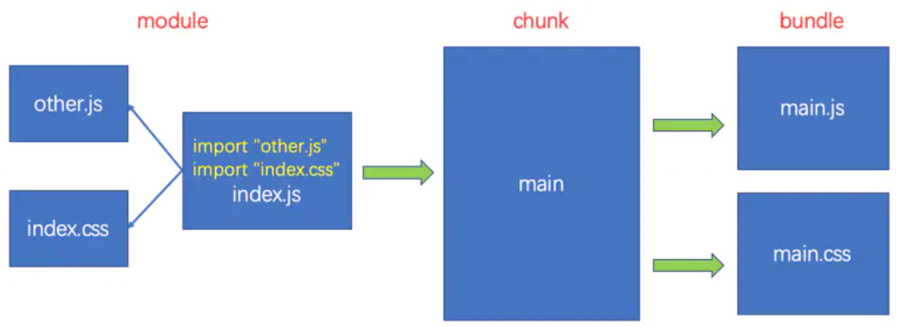
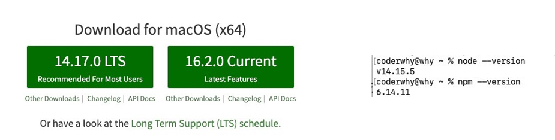
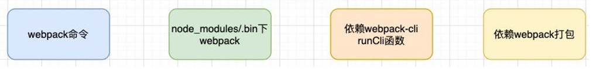

什么是构建工具
事实上随着前端的快速发展，目前前端的开发已经变的越来越复杂了：
比如开发过程中我们需要通过模块化的方式来开发；
比如也会使用一些高级的特性来加快我们的开发效率或者安全性，比如通过ES6+、TypeScript开发脚本逻辑， 通过sass、less等方式来编写css样式代码；
比如开发过程中，我们还希望实时的监听文件的变化来并且反映到浏览器上，提高开发的效率；
比如开发完成后我们还需要将代码进行压缩、合并以及其他相关的优化；
等等….
上述这些工作理论上是可以人工完成的，但是它繁琐，工作量大，本质是无意义的劳动，人为的错误也随着流程的增加而增加了更多的出错率。所以每一个团队都希望有一种工具，能帮助整个团队在开发中能精简流程、提高效率、减少错误率，管理各种小工具之间的错综复杂的关系或者配置，这种工具就叫构建工具。
说到构建工具，我往往会在前面加**「自动化」**三个字，因为构建工具就是用来让我们不再做机械重复的事情，解放我们的双手的(my god)。所以构建工具作用是：提升项目性能，提高开发效率。
构建工具的发展
有了工具能满足基本的打包工作，对于开发人员而言总是需要更精益求精。就像在一辆能发动的车上去安装各种零件来提升使用者的体验。这些零件就是构建工具所需要的插件，这些插件对提升开发效率很有帮助，包括语法转换（Babel），模板热更新（HotModuleReplacementPlugin），清理重复的打包的文件（clean-webpack-plugin）等等。
构建工具目前来说还在处于不停发展的阶段，但是相应的打包技术已经很成熟。 本次主要介绍市面上比较火热的Grunt， Webpack, Vite这三个打包工具之间的对比和它们的优势。
构建工具介绍
Grunt: 是一个优化前端的开发流程的工具。
配置一系列的task，定义task处理的事务（例如文件压缩合并、启动server、版本控制等），然后定义执行顺序，来让Grunt执行这些task，从而构建项目的整个前端开发流程。
工作方式：

Wepack: 是一种模块化的解决方案。更强调模块化。
把你的项目当做一个整体，通过一个指定的主文件名（index.js, 一般是入口文件），webpack 将从这个文件开始找到你的项目所依赖的文件，使用loaders 来处理它们，最后打包为一个浏览器可识别的js 文件。

Vite: 一种新型前端构建工具,它区别与不同的打包工具,它在开发环境中不对项目进行整体打包。
原因：当我们的构建的项目越来越庞大时，对整个项目进行资源整合的时间会变长，如果有数千个模块的项目在进行构建时甚至需要几分钟才能启动开发服务器。所以vite解决了在开发过程中需要等待整个项目打包这一段过程，让开发时更加丝滑。
依赖：使用esbuild（GO编写）预构建依赖，比 JavaScript 编写的打包器预构建依赖快 10-100 倍。
源码：在浏览器请求资源时-> vite转换一些非js文件->动态导入代码。
源码利用浏览器的协商缓存（304 Not Modified），依赖模块请求则会通过 Cache-Control: max-age=31536000, immutable 进行强缓存，保持热更新的速度。

如何选择适合的构建工具？
Grunt对于一些中小型项目而言更加轻便和灵活，如果只针对代码压缩合并，Grunt就可以满足要求，发展历程长，基本是稳定的。但是如果要处理庞大的项目文件，特别是处理多种类型的资源文件，强调模块开发，Webpack则更适合这个场景。Webpack对于中大型项目而言是更加稳定的，文档资料和迭代速度也很快。当然这对开发人员而言也是挺头疼的，隔一段时间就需要去适应文档的配置。Vite作为一门新的构建技术，想要它去构建一门稳定的中大型项目有点冒险，虽然已经发布稳定版本，但是还是会有一些潜在的风险，等它更多人推广后使用更加稳妥，但是对于平时构建一些个人网站和项目等使用vite，感受一下它的便捷也可以。
什么是webpack
webpack是一种前端资源构建工具，一个静态模块打包器(module bundler)。 在 webpack看来,前端的所有资源文件(js/json/css/img/less/…)都会作为模块处理。 它将根据模块的依赖关系进行静态分析，打包生成对应的静态资源(bundle)。

理解module、chunk、bundle
在 webpack 中，一切皆module，任何一个文件都可以看成是module。js、css、图片等都是module
webpack 会将入口文件以及它的依赖引入到一个 chunk 中，然后进过一系列处理打包成bundle

大致流程如下：
1、根据main.js入口文件依赖关系生成树状图
2、根据树状图引入相关的资源 生成chunk(块)
3、对chunk进行处理 (babel、less-loader …)
4、打包生成bundler.js
5、将bundler.js文件引入到index.html中
webpack五个核心概念
Entry
入口（Entry）：指示 webpack以哪个文件为入口起点开始打包，分析构建内部依赖图。其取值可以是字符串，数组或者一个对象
1 | // 单入口单文件 |
Output
输出（Output）：指示 webpack打包后的资源 bundles输出到哪里去，以及如何命名
webpack打包的输出，常用配置如下：
1 | output: { |
Loader
处理器（Loader）：webpack默认只能处理js、json格式的文件，而loader的作用则是将其他格式的文件，转换成webpack能够处理的文件
使用loader需要在webpack配置文件的module.rules中配置：
1 | module.exports = { |
Plugins
插件(Plugins)可以用于执行范围更广的任务，它能处理loader无法处理的事情。插件的范围包括，从打包优化和压缩， 一直到重新定义环境中的变量等。
它使用非常简单，在plugins数组中添加插件的实例化对象即可
1 | const xxxWebpackPlugin = require("xxx-webpack-plugin"); |
mode
webpack打包分为两种模式，开发模式（development）与生产模式（production），默认为生产模式
| 选项 | 描述 | 特点 |
|---|---|---|
| development | 会将 process.env.NODE_ENV 的值设为 development。启用 NamedChunksPlugin 和 NamedModulesPlugin。 | 能让代码本地调试 运行的环境 |
| production | 会将 process.env.NODE_ENV 的值设为 production。启用 FlagDependencyUsagePlugin, FlagIncludedChunksPlugin, ModuleConcatenationPlugin, NoEmitOnErrorsPlugin, OccurrenceOrderPlugin, SideEffectsFlagPlugin 和 UglifyJsPlugin. | 能让代码优化上线 运行的环境 |
webpack使用前提
webpack的官方文档是https://webpack.js.org/
webpack的中文官方文档是https://webpack.docschina.org/
DOCUMENTATION：文档详情，也是我们最关注的
Webpack的运行是依赖Node环境的，所以我们电脑上必须有Node环境
所以我们需要先安装Node.js，并且同时会安装npm；
我当前电脑上的node版本是v14.15.5，npm版本是6.14.11（你也可以使用nvm或者n来管理Node版本）；
Node官方网站：https://nodejs.org/

webpack安装
webpack的安装目前分为两个：webpack、webpack-cli
那么它们是什么关系呢？
执行webpack命令，会执行node_modules下的.bin目录下的webpack；
webpack在执行时是依赖webpack-cli的，如果没有安装就会报错；
而webpack-cli中代码执行时，才是真正利用webpack进行编译和打包的过程；
所以在安装webpack时，我们需要同时安装webpack-cli（第三方的脚手架事实上是没有使用webpack-cli的，而是类似于自 己的 vue-service-cli 的东西）

全局安装：npm install webpack webpack-cli –g
局部安装：npm install webpack webpack-cli –D
webpack的默认打包
我们可以通过webpack进行打包，之后运行打包之后的代码
在目录下直接执行 webpack 命令：webpack
生成一个dist文件夹，里面存放一个main.js的文件，就是我们打包之后的文件：
这个文件中的代码被压缩和丑化了；
另外我们发现代码中依然存在ES6的语法，比如箭头函数、const等，这是因为默认情况下webpack并不清楚我们打包后的文 件是否需要转成ES5之前的语法，后续我们需要通过babel来进行转换和设置；
我们发现是可以正常进行打包的，但是有一个问题，webpack是如何确定我们的入口的呢？
事实上，当我们运行webpack时，webpack会查找当前目录下的 src/index.js作为入口；
所以，如果当前项目中没有存在src/index.js文件，那么会报错；
当然，我们也可以通过配置来指定入口和出口
开发环境指令：
webpack src/js/index.js -o build/js/built.js --mode=development
功能：webpack能够编译打包 js和 json文件，并且能将 es6的模块化语法转换成 浏览器能识别的语法。
webpack --entry ./src/main.js --output-path ./build/js/bundle.js --mode=development
生产环境指令：
webpack src/js/index.js -o build/js/built.js --mode=production
功能：在开发配置功能上多一个功能，压缩代码。
webpack --entry ./src/main.js --output-path ./build/js/bundle.js --mode=production
结论 ：
webpack能够编译打包 js和 json文件。
能将 es6的模块化语法转换成浏览器能识别的语法。
能压缩代码。
问题 ：
不能编译打包 css、img等文件。
不能将 js的 es6基本语法转化为 es5以下语法。